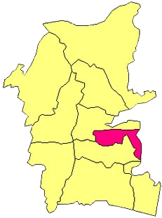

Hometown

Tanah Grogot
Tanah Grogot is the capital of Paser Regency, as well as the center of government and economy for Paser Regency. Tanah Grogot is located in Paser Regency, East Kalimantan Province, Indonesia. Tanah Grogot is known as the "Purple City" because many public facilities, buildings, sidewalks, and official vehicles in the area are dominated by the color purple.